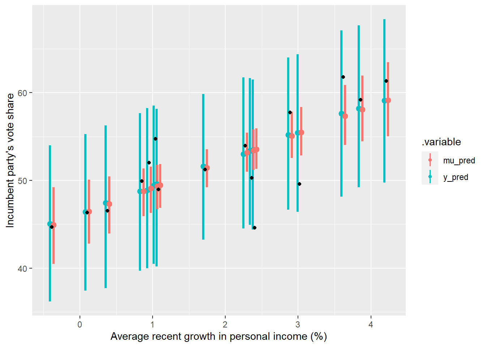

Chapter 2 Generated Quantities
Introduction to the Generated Quantities Block
Here’s the Stan model we wrote in the last chapter:
data{
int<lower=0> n;
vector[n] vote;
vector[n] growth;
}
parameters{
real a;
real b;
real<lower=0> sigma;
}
model{
vote ~ normal( a + b * growth , sigma );
}In the Stan code above, we used the data, parameters, and model blocks. One block that wasn’t used is the (optional) generated quantities block. It runs after the sample at each iteration, and so can be used without slowing down the sampling process too much.
Let’s start by seeing what variables exist in the model samples, and we can think about what’s not in there that we might like to have.
extract(m1_1b)%>%
names()## [1] "a" "b" "sigma" "lp__"We have the three parameters we included in the model specification: the intercept \(a\), the slope parameter \(b\), and the scale parameter \(\sigma\). The term “lp__” is unusual. According to the reference manual, it’s “the log posterior density (up to a constant)”. However the manual also describes it as deprecated, as says it should not be used. This helpful blog post describes it a little more. At each iteration, the lp__ term calculates the log likelihood of each observation given the sampled parameter values at that iteration. It then sums them, so the lp__ vector has length equal to the number of iterations.
This sounds useful, so why is it deprecated and its use discouraged? It’s a little over my head, but according to the above blog post, Stan scales the likelihood in such a way that the resulting log likelihood term not useful for model comparison because the scale factor changes across models.
The fact that lp__ sums the log likelihoods of each observation is also a problem if we want to, say, use some importance sampling or leave-one-out approach to evaluate our models.
Alright, so ignoring lp__ our model above provides us with samples for three parameters. What else might we want? Some possibilities are:
- Draw from the linear predictor, in the model structure above this means \(\mu\) such that \(\mu = a + b*x\).
- Draw from the posterior predictive distribution, i.e. \(y\) such that \(y \sim \text{Normal}(\mu,\sigma)\) in the model structure above.
- We may want the log likelihood for the reasons described above.
- We may want to be able to do prior predictive checks without using MCMC (conditioning on no data to return the prior), which is possible but inefficient.
All of these things can be done inside the generated quantities block (I believe!), and I’m going to spend the rest of this page trying to figure out how to do this.
Drawing from Linear Predictor & Posterior
We can use the generated quantities block to make predictions given the sampled parameters and some set of predictors.
Predictions on Existing Data
If we want to retrodict the data, i.e. make predictions from the observed predictor values to compare them to the observed outcome values we can add the following generated quantities block to our code above:
generated quantities{
vector[n] mu_pred;
vector[n] y_pred;
for (i in 1:n) {
mu_pred[i] = a + b * growth[i];
y_pred[i] = normal_rng(mu_pred[i], sigma);
}
}The code above defines two new quantities, mu_pred and y_pred. mu_pred is the linear predictor i.e \(\mu\) in the model structure below:
\[ \begin{aligned} y_i &\sim \text{Normal}(\mu_i, sigma) \\ mu_i &= \alpha + \beta x_i \end{aligned} \]
And y_pred is the posterior prediction - it includes the uncertainty induced by the \(\sigma\) term. In the code above, the predictions are performed using the sampled parameter values and the existing predictor (in this case growth) values.
In a simple model like this one, it’s maybe overkill to define both of these quantities separately in our model. Maybe we only care about the posterior predictions. However, when we get to generalised linear models where the linear predictor is transformed before being fed into whatever distribution we’re using, it will be more useful to have both.
Adding the above generated quantities block to our existing model code, compiling it, and sampling makes our new quantities available to us:
extract(m_gen_1)%>%
names()## [1] "a" "b" "sigma" "mu_pred" "y_pred" "lp__"What structure do our new quantities have? The get_variables function from tidybayes tells us what variables are available to us, and this gives us a hint:
get_variables(m_gen_1)## [1] "a" "b" "sigma" "mu_pred[1]"
## [5] "mu_pred[2]" "mu_pred[3]" "mu_pred[4]" "mu_pred[5]"
## [9] "mu_pred[6]" "mu_pred[7]" "mu_pred[8]" "mu_pred[9]"
## [13] "mu_pred[10]" "mu_pred[11]" "mu_pred[12]" "mu_pred[13]"
## [17] "mu_pred[14]" "mu_pred[15]" "mu_pred[16]" "y_pred[1]"
## [21] "y_pred[2]" "y_pred[3]" "y_pred[4]" "y_pred[5]"
## [25] "y_pred[6]" "y_pred[7]" "y_pred[8]" "y_pred[9]"
## [29] "y_pred[10]" "y_pred[11]" "y_pred[12]" "y_pred[13]"
## [33] "y_pred[14]" "y_pred[15]" "y_pred[16]" "lp__"
## [37] "accept_stat__" "stepsize__" "treedepth__" "n_leapfrog__"
## [41] "divergent__" "energy__"There are 16 variables each for mu_pred and y_pred, one for each predictor value. Each of these variables has been sampled 1,000 times, so we get a full posterior distribution for each and not just a point prediction. We can extract these draws using tidybayes functions, for example:
m_gen_1%>%
spread_draws(mu_pred[i], y_pred[i])%>%
head()## Warning: `gather_()` was deprecated in tidyr 1.2.0.
## Please use `gather()` instead.
## This warning is displayed once every 8 hours.
## Call `lifecycle::last_lifecycle_warnings()` to see where this warning was generated.## # A tibble: 6 x 6
## # Groups: i [1]
## i mu_pred .chain .iteration .draw y_pred
## <int> <dbl> <int> <int> <int> <dbl>
## 1 1 52.2 1 1 1 50.8
## 2 1 55.1 1 2 2 56.3
## 3 1 55.6 1 3 3 58.4
## 4 1 51.4 1 4 4 49.2
## 5 1 54.8 1 5 5 52.2
## 6 1 54.2 1 6 6 55.3Let’s plot them over the existing data:
# We extract the draws from the model
draws_gen_1 <- m_gen_1%>%
gather_draws(mu_pred[i], y_pred[i])%>%
mean_qi(.width = 0.95)%>% # specify the 95% posterior interval
mutate(growth = data_hibbs$growth[i]) # we need to add the predictor values to position on the x-axis
ggplot(data = draws_gen_1, aes(x = growth, y = .value))+
geom_pointinterval(aes(ymin = .lower, ymax = .upper, colour = .variable), # plot the posterior intervals
position = position_dodge(width = -0.1))+
geom_point(data = hibbs, aes(y = vote))+ # plot the initial date
xlab("Average recent growth in personal income (%)")+
ylab("Incumbent party's vote share")
This probably isn’t the clearest way to present these predictions, but we’ve proven the concept: we can extract and work with the the posterior distributions for \(\mu\) and \(y\).
Predictions on New Data
Prior Predictive Checks
https://stackoverflow.com/questions/57703920/sampling-from-prior-without-running-a-separate-model
Adding the Log Likelihood
https://vasishth.github.io/bayescogsci/book/cross-validation-in-stan.html#psis-loo-cv-in-stan
Further Reading {-}
To make predictions on new data: User Manual page 43
Blog post on lp__: https://www.jax.org/news-and-insights/jax-blog/2015/october/lp-in-stan-output